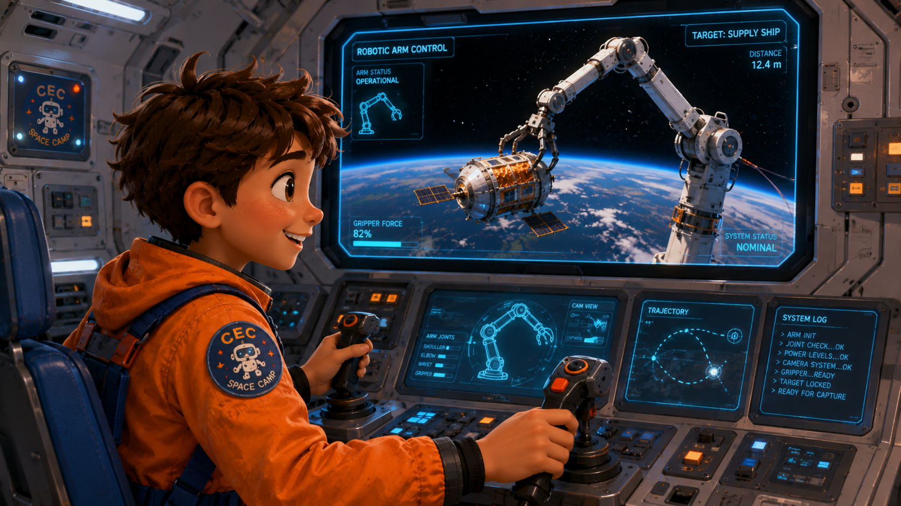

ISS에는 17미터짜리 거대한 로봇팔 캐나다암이 있습니다. 조이스틱으로 로봇팔을 조종해 우주에 떠있는 화물 모듈을 캡처하세요. 천천히, 화면 집중, 정확하게!
Today is Step 13. It is time to dock!
The ISS is floating in space.
Our spacecraft is getting closer.
We need to connect to it.
This is called docking.
Docking means connecting two spaceships together.
First, we train underwater.
The pool feels like space.
We learn to move slowly and carefully.
Then we fly to the ISS.
10... 9... 8... 3... 2... 1...
Contact! We are connected!
Docking complete. Welcome to the ISS!
오늘은 11단계입니다. 도킹할 시간입니다!
ISS가 우주에 떠있습니다.
우리 우주선이 점점 가까워지고 있습니다.
연결해야 합니다.
이것을 도킹이라고 합니다.
도킹은 두 우주선을 서로 연결하는 것입니다.
먼저 수중에서 훈련합니다.
수영장은 우주와 비슷하게 느껴집니다.
천천히 신중하게 움직이는 법을 배웁니다.
그런 다음 ISS로 날아갑니다.
10... 9... 8... 3... 2... 1...
접촉! 연결됐습니다!
도킹 완료. ISS에 오신 것을 환영합니다!
In Step 13, the crew must dock with the International Space Station — the ISS.
Docking means connecting a spacecraft to the ISS while both are traveling at 28,000 kilometers per hour.
The docking port is only about 80 centimeters wide.
One small mistake can cause a crash.
Before the real mission, astronauts train in the Neutral Buoyancy Lab — a giant swimming pool at NASA.
In the pool, astronauts wear weighted spacesuits so they float in place — just like in space.
They practice moving slowly and working as a team, again and again.
During the real docking, the pilot watches the radar screen carefully.
The navigator calls out the distance: "Twenty meters... ten meters... five meters."
The pilot makes tiny adjustments — left, right, up, down — using small thrusters.
Then, at exactly the right moment:
Contact.
Latches lock. The spacecraft and the ISS are connected.
Mission Control announces: "Docking confirmed. Welcome to the ISS."
Slow. Steady. Precise. That is how astronauts dock in space.
11단계에서 크루는 국제우주정거장(ISS)과 도킹해야 합니다.
도킹은 두 우주선이 모두 시속 28,000km로 이동하면서 연결하는 것입니다.
도킹 포트는 약 80cm 너비입니다. 작은 실수 하나가 충돌을 일으킬 수 있습니다.
실전 임무 전에 우주비행사들은 중립부력 실험실에서 훈련합니다 — NASA의 거대한 수영장입니다.
수영장에서 우주비행사들은 무게가 있는 우주복을 입어 제자리에 뜨게 됩니다 — 우주처럼요.
천천히 움직이고 팀으로 일하는 법을 반복 연습합니다.
실제 도킹 중에 파일럿은 레이더 화면을 주의 깊게 봅니다.
네비게이터가 거리를 호출합니다: "20미터... 10미터... 5미터."
그런 다음 정확한 순간에: 접촉.
잠금장치가 걸립니다. 우주선과 ISS가 연결됩니다.
미션 컨트롤이 발표합니다: "도킹 확인. ISS에 오신 것을 환영합니다."
천천히. 안정적으로. 정확하게. 그것이 우주에서 도킹하는 방법입니다.
Docking with the International Space Station is one of the most precise operations in human spaceflight.
The ISS orbits Earth at approximately 7.7 kilometers per second.
A visiting spacecraft must match this velocity exactly before attempting to dock.
This process — called orbital rendezvous — can take several hours of careful maneuvering.
The docking sequence itself follows strict phases.
Soft capture occurs when the docking ring makes initial contact and probe mechanisms engage.
Hard mate follows, as 12 structural latches lock the two vehicles together permanently.
Finally, pressurization equalizes air pressure in the connecting tunnel so astronauts can safely open the hatch.
To train for this sequence, NASA uses the Neutral Buoyancy Laboratory — a pool containing 23 million liters of water.
Full-scale ISS modules are submerged inside.
Astronauts in weighted spacesuits spend up to 6 hours at a time practicing each step underwater.
During actual docking, the crew monitors translational velocity (forward/backward movement) and rotational axes — pitch, yaw, and roll — simultaneously.
Any deviation beyond a few centimeters requires an immediate thruster correction or a complete docking abort.
The precision required is extraordinary.
Yet astronauts achieve successful docking again and again — because they prepare completely, communicate constantly, and trust each other absolutely.
국제우주정거장과의 도킹은 인류 우주비행에서 가장 정밀한 작업 중 하나입니다.
ISS는 초당 약 7.7km 속도로 지구를 공전합니다.
방문 우주선은 도킹을 시도하기 전에 이 속도를 정확히 맞춰야 합니다.
이 과정을 궤도 랑데부라고 하며 몇 시간이 걸릴 수 있습니다.
도킹 시퀀스는 엄격한 단계를 따릅니다.
소프트 캡처는 도킹 링이 처음 접촉하고 프로브 메커니즘이 작동할 때 발생합니다.
하드 메이트는 12개의 구조 잠금장치가 두 기체를 영구적으로 고정할 때 이어집니다.
마지막으로 가압이 연결 터널의 기압을 조정하여 우주비행사들이 해치를 안전하게 열 수 있게 합니다.
이 시퀀스를 훈련하기 위해 NASA는 2,300만 리터의 물을 담은 중립부력 실험실을 사용합니다.
실물 크기의 ISS 모듈이 수중에 잠겨 있습니다.
우주비행사들은 각 단계를 수중에서 연습하며 한 번에 최대 6시간을 보냅니다.
실제 도킹 중에 크루는 병진 속도와 회전 축 — 피치, 요, 롤 — 을 동시에 모니터링합니다.
수 센티미터를 초과하는 편차는 즉각적인 추진기 수정 또는 완전한 도킹 중단을 요구합니다.
요구되는 정밀도는 놀랍습니다.
그럼에도 우주비행사들은 성공적인 도킹을 반복 달성합니다 — 완벽히 준비하고, 끊임없이 소통하고, 서로를 절대적으로 신뢰하기 때문입니다.